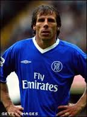
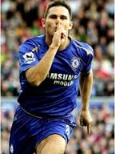
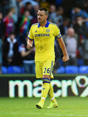
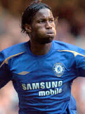

История
ФК Челси
е основан през 1905 г. от англичани, които имали мечта – да направят клуб, който да играе възможно най-елитният футбол. Година по-рано строителният предприемач Гъс Миърс искал футболът да стане популярен спорт в Лондон и за тази цел закупил бъдещия стадион Стамфорд Бридж. Той, заедно с братята си, имал желанието да го превърне в най-модерния спортен комплекс в английската столица и започнал да търси местен футболен клуб, който да се наеме със стопанисването му и да играе срещите си на него. От ФК Фулъм проявили интерес, но наемът бил прекалено висок за тях и отхвърлили офертата, която Миърс им предлагал. След отказа на Фулъм, предприемачът решил да продаде съоръжението на Западната железопътна компания. Точно тогава, приятелят му Фредерик Паркър дава идеята да си направи собствен футболен отбор. Той е очарован, но възникват спорове за името на клуба. Има предложения за ФК „Кенсингтън“, ФК „Стамфорд Бридж“ или ФК „Лондон“, но Паркър държи на своето и така в началото на 1905 г. официално е създаден новият клуб ФК „Челси“.
Отличия
Домашни отличия и трофеи
Английската първа дивизия (до 1992) и Английската висша лига (след 1992) (5 титли): 1955, 2005, 2006, 2010, 2015
Втора английска дивизия (2 титли): 1984, 1989
ФА Къп (7 титли): 1970, 1997, 2000, 2007, 2009, 2010, 2012
Купа на лигата (5 титли): 1965, 1998, 2005, 2007, 2015
Къмюнити Шийлд (4 титли): 1955, 2000, 2005, 2009
Фул Мембърс Къп (2 титли): 1986, 1990
Европейски отличия и трофеи
Шампионска лига: 2012
Лига Европа: 2013
КНК (2 титли): 1971, 1998
Суперкупа на Европа: 1998
Известни играчи
| Име | Снимка | Националност |
| Джанфранко Дзола |  | Италия |
| Франк Лампард |  | Англия |
| Джoн Тери |  | Англия |
| Дидие Дрогба |  | Кот д'Ивоар |